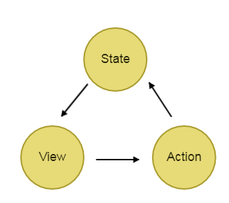

redux源码学习

声明：本文原创，如有雷同，别人抄我。
redux源码竟然那么短小。
为什么会出现redux?
在js单页面应用中，js需要管理复杂的state （状态）。由于前端有各种复杂的UI交互，包括ajax等等，都会去改变state。state 在什么时候，由于什么原因，如何变化已然不受控制，想重现问题或者添加新功能就会变得非常困难。
redux可以维护页面的state （状态），让状态变的可以预测，用过特定的方式触发数据改变，强制让所有的状态变化都必须留下一笔记录，这样就可以利用这个来做各种 debug 工具、历史回滚等等。所谓的单向数据流，就是当用户进行操作的时候，会从组件发出一个 action，这个 action 流到 store 里面，触发 store 对状态进行改动，然后 store 又触发组件基于新的状态重新渲染。
redux是怎么做到可预测的
单一数据源，所有数据都是只读的
要想修改数据，必须 dispatch 一个 action 来描述什么发生了
改变当处理 action 时，必须生成一个新的 state，不得直接修改原始对象
redux单向数据流
调用 store.dispatch(action)
store 调用传入的 reducer 函数
根 reducer 应该把多个子 reducer 输出合并成一个单一的 state 树。
store 保存了根 reducer 返回的完整 state 树。
这个新的树就是应用的下一个 state,所有订阅 store.subscribe(listener) 的监听器都将被调用；
监听器里可以调用 store.getState() 获得当前 state。
极简单项数据流图：

redux使用中存在的问题
redux本身非常短小，概念清晰，但把复杂的工作交给了用户，用户的使用比较复杂，以开发效率换取了数据管理。
与vuex进行对比
实际上不应该用redux对比vuex,而应该用redux+react-redux对比vue。 vuex是专门为Vue设计的状态管理库，而Redux和React之间没有关系，Redux通过React-redux与react搭配使用。vuex的基本思想以及api,与redux都非常相似，但是vuex对数据的驱动，试图的更新是通过其响应式原理完成的，与react-redux+redux不同。
本文以源码的目录结构，来记录自己的学习旅程。
简单的思维导图：

源码目录：
├── index.js
├── applyMiddleware.js
├── bindActionCreators.js
├── combineReducers.js
├── compose.js
├── createStore
└── utils
└── warning.js
index.js
export {
createStore,
combineReducers,
bindActionCreators,
applyMiddleware,
compose
}
index.js短短几行暴露出几个核心的API。
warning.js
export default function warning(message) {
if (typeof console !== 'undefined' && typeof console.error === 'function') {
console.error(message)
}
try {
throw new Error(message)
} catch (e) { }
}
同样是很简单的文件，用于抛出错误
createStore.js
该文件核心：
1）createStore函数接受参数后，返回一个store对象,这个对象对外暴露了dispatch，subscribe,getState,replaceReducer几个函数。
2）为了初始化state,createStore函数内部执行了一次 dispatch({ type: ActionTypes.INIT })
function createStore(reducer, preloadedState, enhancer){
......
return {
dispatch, //唯一一个可以改变 state 的函数
subscribe, //订阅一个状态改变后，要触发的监听函数
getState, // 获取 store 里的 state
replaceReducer, //Redux热加载的时候可以替换 Reducer
[$$observable]: observable //对象的私有属性，供内部使用
}
}
接下来，逐步分析整个文件。
createStore接受3个参数：reducer，preloadedState， enhancer
reducer
reducer是一个函数，接受当前state和action作为参数，返回next state。
redux要求我们输入的reducer必须是纯函数，那么为什么要保证reduer为纯函数呢？
（纯函数概念：函数的返回结果只依赖于它的参数，函数执行过程里面没有副作用，副作用是指对外部产生变化）
- 不改变输入的state,可以支持回滚，保存快照等操作
- 不引起外界数据变化，保证reduer的结果是可预测的
实际上，也不一定非纯函数不可，只能说纯函数是一种最佳实践。社区中，有一些讨论，参考
preloadedState
初始化的state。可以用于服务端取得初始化的值。在reducers里可以设置初始值
reducerfun(state = 4, action){}
两者同时设置，以preloadedState为准。
enhancer
增强store。是一个组合 store creator 的高阶函数，返回一个新的强化过的 store creator。
createStore函数内部首先做了一些简单的准备操作。
/**
*如果preloadedState是函数，且enhancer为undefined,则enhancer为preloadedState的值，
*而preloadedState则为undefined，意思是我们输入参数的时候，preloadedState可以被省略输入
*/
if (typeof preloadedState === 'function' && typeof enhancer === 'undefined') {
enhancer = preloadedState
preloadedState = undefined
}
/**
*enhancer对createStore函数进行增强，然后才传入参数reducer, preloadedState
*/
if (typeof enhancer !== 'undefined') {
if (typeof enhancer !== 'function') {
throw new Error('Expected the enhancer to be a function.')
}
return enhancer(createStore)(reducer, preloadedState)
}
if (typeof reducer !== 'function') {
throw new Error('Expected the reducer to be a function.')
}
内部变量，不对外暴露
let currentReducer = reducer //当前reducer,currentReducer用于执行action
let currentState = preloadedState //当前的状态
let currentListeners = [] //
let nextListeners = currentListeners
let isDispatching = false //记录是不是正在dispath
function ensureCanMutateNextListeners() {
if (nextListeners === currentListeners) {
nextListeners = currentListeners.slice()
}
}
对外暴露getState函数，使得外部通过store.getState()就可以得到state的值
function getState() {
return currentState
}
对外暴露subscribe函数，用于注册listener，当dispatch，subscribe注册的listener就会被执行，
返回一个unsubscribe函数，执行这个函数之后，listener将被注销。
ensureCanMutateNextListeners用于切断nextListeners和currentListeners
之间的联系。使得当dispatch时，注册或者或者注销listener，对dispatch不会立即产生影响。
function subscribe(listener) {
if (typeof listener !== 'function') {
throw new Error('Expected listener to be a function.')
}
let isSubscribed = true
//注册listener
ensureCanMutateNextListeners()
nextListeners.push(listener)
return function unsubscribe() {
if (!isSubscribed) {
return
}
isSubscribed = false
ensureCanMutateNextListeners()
const index = nextListeners.indexOf(listener)
nextListeners.splice(index, 1)
}
}
对外暴露dispatch函数
function dispatch(action) {
/**
*isPlainObject用于检查 value 是否是普通对象。 也就是说该对象由 Object 构造函数创建或者
*[[Prototype]] 为空。
*/
if (!isPlainObject(action)) {
throw new Error(
'Actions must be plain objects. ' +
'Use custom middleware for async actions.'
)
}
if (typeof action.type === 'undefined') {
throw new Error(
'Actions may not have an undefined "type" property. ' +
'Have you misspelled a constant?'
)
}
//正在dispath的时候不能再次dispath
if (isDispatching) {
throw new Error('Reducers may not dispatch actions.')
}
/**
*currentState执行后重新赋值
*/
try {
isDispatching = true
currentState = currentReducer(currentState, action)
} finally {
isDispatching = false
}
//执行listener
const listeners = currentListeners = nextListeners
for (let i = 0; i < listeners.length; i++) {
const listener = listeners[i]
listener()
}
return action
}
replaceReducer
替换 store 当前用来计算 state 的 reducer。
这是一个高级 API。只有在你需要实现代码分隔，而且需要立即加载一些 reducer 的时候才可能会用到它。在实现 Redux 热加载机制的时候也可能会用到。
function replaceReducer(nextReducer) {
if (typeof nextReducer !== 'function') {
throw new Error('Expected the nextReducer to be a function.')
}
currentReducer = nextReducer
dispatch({ type: ActionTypes.INIT })
}
observable函数是一个内部函数，没有在得到调用，因此暂时放一边。
最后，在createStore函数内部中执行了
const ActionTypes = {
INIT: '@@redux/INIT'
}
//初始化 store 里的 state tree
dispatch({ type: ActionTypes.INIT })
可以知道，当preloadedState为undefined,currentState将会等于currentReducer函数中为state设置的初始值。
combineReducers.js
combineReducers 辅助函数的作用是，把一个由多个不同 reducer 函数作为 value 的 object，合并成一个最终的 reducer 函数，然后就可以对这个 reducer 调用 createStore，生成store对象。
由于每个reducer在处理action的时候，如果store发生了改变，则返回新的对象。因此，combineReducers.js中，可以对比每个store(子store)的引用，就可以知道这个store是否
真正发生改变。这大大节约了比较成本，要比较2个JS对象是否完全相同，必须进行深比较。但是深比较在真实的应用当中代价昂贵，因为通常js的对象都很大，同时需要比较的次数很多。因此，当state改变，reduer就返回新对象，这样用可以通过比较引用就知道state是否正在改变
export default function combineReducers(reducers) {
....//校验与检测
/*
*返回combination，为组合之后的reducer
*finalReducerKeys为检测之后的ReducerKeys
*finalReducers为reducer组成的对象
*/
return function combination(state = {}, action) {
if (shapeAssertionError) {
throw shapeAssertionError
}
if (process.env.NODE_ENV !== 'production') {
const warningMessage = getUnexpectedStateShapeWarningMessage(state, finalReducers, action, unexpectedKeyCache)
if (warningMessage) {
warning(warningMessage)
}
}
let hasChanged = false
const nextState = {}
/*
*逐个更新每个reducer中对应的state
*/
for (let i = 0; i < finalReducerKeys.length; i++) {
const key = finalReducerKeys[i]
const reducer = finalReducers[key]
const previousStateForKey = state[key]
const nextStateForKey = reducer(previousStateForKey, action)
if (typeof nextStateForKey === 'undefined') {
const errorMessage = getUndefinedStateErrorMessage(key, action)
throw new Error(errorMessage)
}
nextState[key] = nextStateForKey
hasChanged = hasChanged || nextStateForKey !== previousStateForKey
}
/*
*只有输出的state真正改变了，才会更新输出nextState
*/
return hasChanged ? nextState : state
}
}
compose.js
从右到左来组合多个函数。
compose(f, g, h) 与 (…args) => f(g(h(…args)))相同
常常用来组合中间件
export default function compose(...funcs) {
if (funcs.length === 0) {
return arg => arg
}
if (funcs.length === 1) {
return funcs[0]
}
return funcs.reduce((a, b) => (...args) => a(b(...args)))
}
applyMiddleware.js
Middleware 可以让你包装 store 的 dispatch 方法来达到你想要的目的。同时， middleware 还拥有“可组合”这一关键特性。多个 middleware 可以被组合到一起使用，形成 middleware 链。其中，每个 middleware 都不需要关心链中它前后的 middleware 的任何信息。
本质上middlewares就是对store.dispatch进行了包装，在原有功能的基础上增加了别的功能
export default function applyMiddleware(...middlewares) {
return (createStore) => (reducer, preloadedState, enhancer) => {
const store = createStore(reducer, preloadedState, enhancer)
let dispatch = store.dispatch
let chain = []
const middlewareAPI = {
getState: store.getState,
dispatch: (action) => dispatch(action)
}
chain = middlewares.map(middleware => middleware(middlewareAPI))
dispatch = compose(...chain)(store.dispatch)
return {
...store,
dispatch
}
}
}
bindActionCreator.js
把 action creators 转成拥有同名 keys 的对象，
但使用 dispatch 把每个 action creator 包围起来，这样可以直接调用它们。
本质上就是将actionCreator和dispatch的工作集成在一个函数中。
输入actionCreators为单一函数，则返回函数。
输入为对象时，则返回对象，对象的key值与actionCreators的key值相同。
通过调用返回值boundActionCreators(args),可以完成dispath的操作。
function bindActionCreator(actionCreator, dispatch) {
return (...args) => dispatch(actionCreator(...args))
}
export default function bindActionCreators(actionCreators, dispatch) {
if (typeof actionCreators === 'function') {
return bindActionCreator(actionCreators, dispatch)
}
if (typeof actionCreators !== 'object' || actionCreators === null) {
throw new Error(
`bindActionCreators expected an object or a function, instead received ${actionCreators === null ? 'null' : typeof actionCreators}. ` +
`Did you write "import ActionCreators from" instead of "import * as ActionCreators from"?`
)
}
const keys = Object.keys(actionCreators)
const boundActionCreators = {}
for (let i = 0; i < keys.length; i++) {
const key = keys[i]
const actionCreator = actionCreators[key]
if (typeof actionCreator === 'function') {
boundActionCreators[key] = bindActionCreator(actionCreator, dispatch)
}
}
return boundActionCreators
}